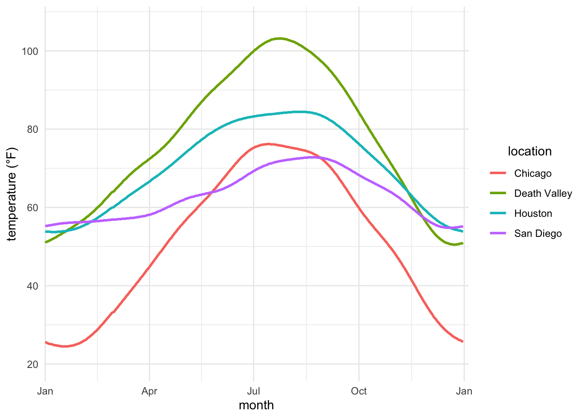
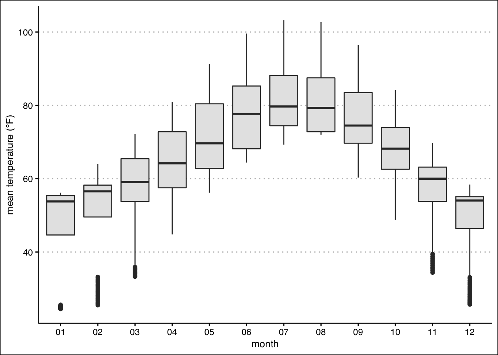
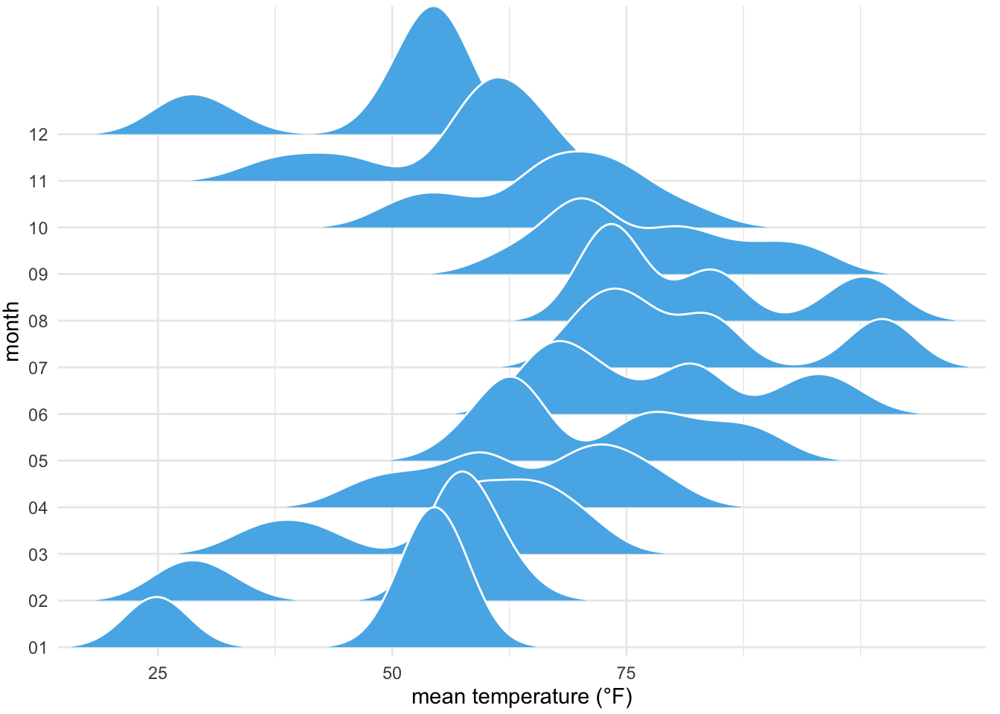
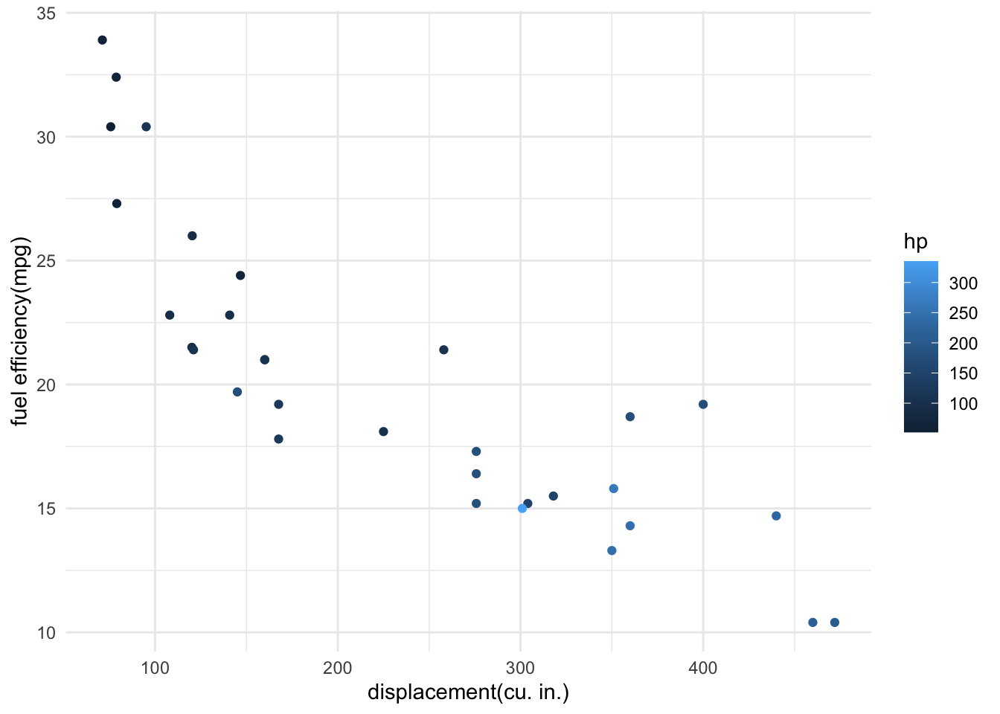
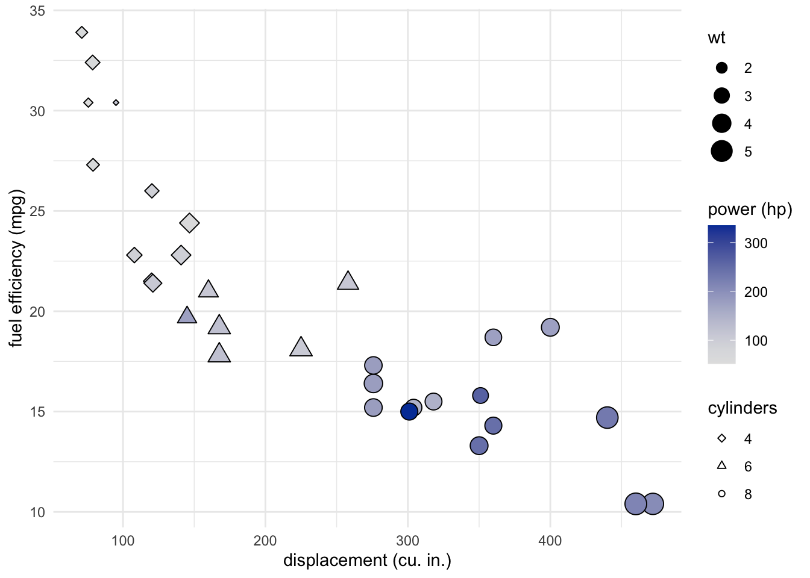
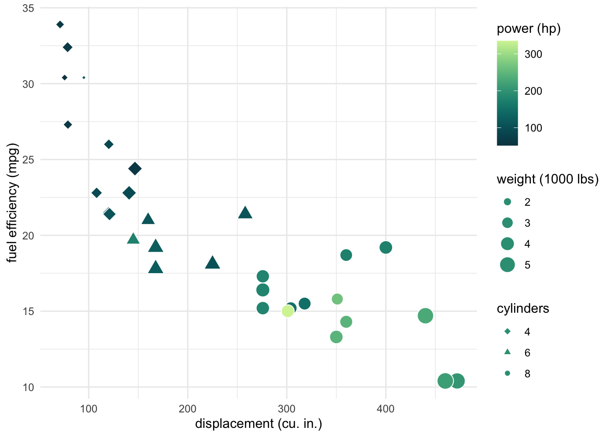
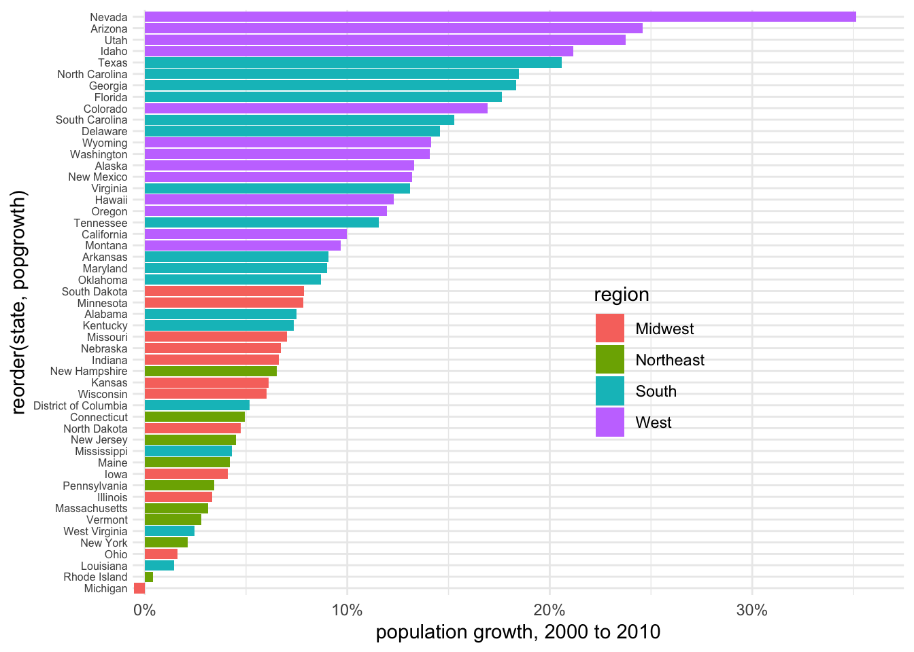
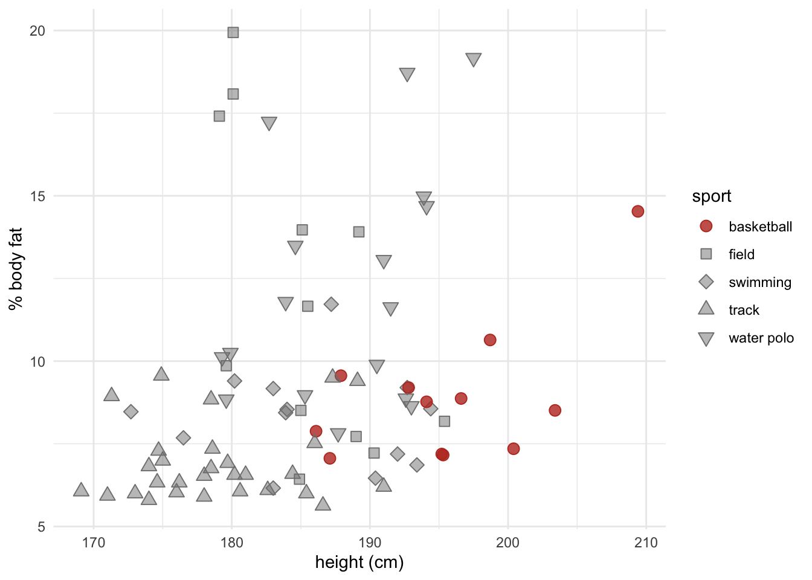
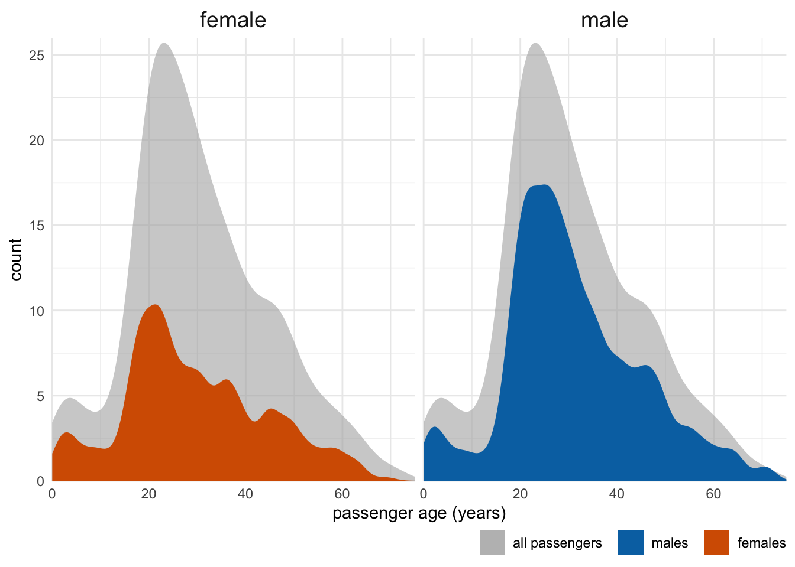
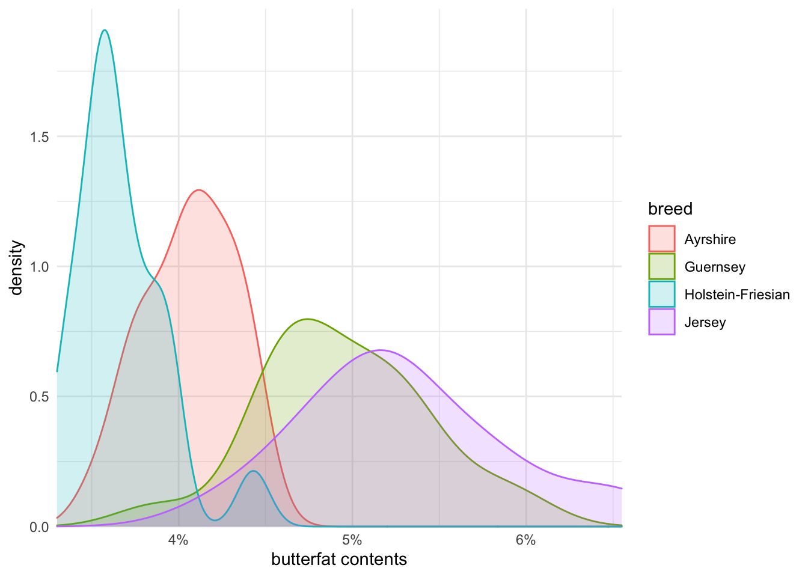

ggplot# install.packages("ggridges")
# install.packages("colorspace")
library(tidyverse)
library(lubridate)
library(ggridges)
library(ggthemes)
theme_set(theme_minimal())
library(colorspace)ncdc_temp <- read_csv(
'https://bcdanl.github.io/data/ncdc_temp_cleaned.csv')
ggplot(ncdc_temp, aes(x = date, y = temperature, color = location)) +
geom_line(size = 1) +
scale_x_date(name = "month", limits = c(ymd("0000-01-01"), ymd("0001-01-04")),
breaks = c(ymd("0000-01-01"), ymd("0000-04-01"), ymd("0000-07-01"),
ymd("0000-10-01"), ymd("0001-01-01")),
labels = c("Jan", "Apr", "Jul", "Oct", "Jan"), expand = c(1/366, 0)) +
scale_y_continuous(limits = c(19.9, 107),
breaks = seq(20, 100, by = 20),
name = "temperature (°F)") +
theme(legend.title.align = 0.5)
ncdc_temp <- read_csv(
'https://bcdanl.github.io/data/ncdc_temp_cleaned.csv')
ggplot(ncdc_temp, aes(x = month, y = temperature)) +
geom_boxplot(fill = 'grey90') +
xlab("month") +
ylab("mean temperature (°F)") +
theme_clean()
ncdc_temp <- read_csv(
'https://bcdanl.github.io/data/ncdc_temp_cleaned.csv')
ggplot(ncdc_temp, aes(x = temperature, y = month)) +
geom_density_ridges(
scale = 3, rel_min_height = 0.01,
bandwidth = 3.4, fill = "#56B4E9", color = "white"
) +
scale_x_continuous(
name = "mean temperature (°F)",
expand = c(0, 0), breaks = c(0, 25, 50, 75)
) +
scale_y_discrete(name = "month", expand = c(0, .2, 0, 2.6)) +
theme(
plot.margin = margin(3, 7, 3, 1.5)
)
mtcarsmtcars?mtcars
m<-ggplot(data = mtcars, aes(x = disp, y = mpg, color = hp))
m + geom_point(aes(color = hp)) +
labs(x = "displacement(cu. in.)", y = "fuel efficiency(mpg)")+
scale_color_gradient()+
scale_fill_brewer(palette = "Emrld")
p <- ggplot(mtcars, aes(x = disp, y = mpg,
fill = hp,
shape = factor(cyl),
size = wt))
p + geom_point() +
scale_shape_manual(values = c(23, 24, 21),
name = "cylinders") +
scale_fill_continuous_sequential(breaks = c(100, 200, 300),
name = "power (hp)") +
xlab("displacement (cu. in.)") +
ylab("fuel efficiency (mpg)") +
theme_minimal()
ggplot(mtcars, aes(x = disp, y = mpg,
fill = hp,
shape = factor(cyl),
size = wt)) +
geom_point(color = "white") +
scale_shape_manual(values = c(23, 24, 21), name = "cylinders") +
scale_fill_continuous_sequential(
palette = "Emrld", name = "power (hp)",
breaks = c(100, 200, 300),
rev = FALSE
) +
xlab("displacement (cu. in.)") +
ylab("fuel efficiency (mpg)") +
guides(
shape = guide_legend(override.aes = list(size = 2, fill = "#329D84")),
size = guide_legend(override.aes = list(shape = 21, fill = "#329D84"),
title = "weight (1000 lbs)")
) +
theme_minimal()
popgrowth_df <- read_csv(
'https://bcdanl.github.io/data/popgrowth.csv')
ggplot(popgrowth_df, aes(x = reorder(state, popgrowth),
y = 100*popgrowth,
fill = region)) +
geom_col() +
scale_y_continuous(
limits = c(-.6, 37.5), expand = c(0, 0),
labels = scales::percent_format(accuracy = 1, scale = 1),
name = "population growth, 2000 to 2010"
) +
coord_flip() +
theme(legend.position = c(.67, .4),
axis.text.y = element_text( size = 6, margin = margin(t = 0, r = 0, b = 0, l = 0) )) 
male_Aus <- read_csv(
'https://bcdanl.github.io/data/aus_athletics_male.csv')
colors <- c("#BD3828", rep("#808080", 4))
fills <- c("#BD3828D0", rep("#80808080", 4))
ggplot(male_Aus, aes(x=height, y=pcBfat,
shape=sport, color = sport, fill = sport)) +
geom_point(size = 3) +
scale_shape_manual(values = 21:25) +
scale_color_manual(values = colors) +
scale_fill_manual(values = fills) +
xlab("height (cm)") +
ylab("% body fat") 
titanic <- read_csv(
'https://bcdanl.github.io/data/titanic_cleaned.csv')
ggplot(titanic, aes(x = age, y = ..count..)) +
geom_density_line(
data = select(titanic, -sex),
aes(fill = "all passengers"),
color = "transparent"
) +
geom_density_line(aes(fill = sex), bw = 2, color = "transparent") +
scale_x_continuous(limits = c(0, 75), name = "passenger age (years)", expand = c(0, 0)) +
scale_y_continuous(limits = c(0, 26), name = "count", expand = c(0, 0)) +
scale_fill_manual(
values = c("#b3b3b3a0", "#0072B2", "#D55E00"),
breaks = c("all passengers", "male", "female"),
labels = c("all passengers ", "males ", "females"),
name = NULL,
guide = guide_legend(direction = "horizontal")
) +
coord_cartesian(clip = "off") +
facet_wrap(~sex) +
theme(
axis.line.x = element_blank(),
strip.text = element_text(size = 14, margin = margin(0, 0, 0.2, 0, "cm")),
legend.position = "bottom",
legend.justification = "right",
legend.margin = margin(4.5, 0, 1.5, 0, "pt"),
legend.spacing.x = grid::unit(4.5, "pt"),
legend.spacing.y = grid::unit(0, "pt"),
legend.box.spacing = grid::unit(0, "cm")
)
cows_filtered <- read_csv(
'https://bcdanl.github.io/data/cows_filtered.csv')
ggplot(cows_filtered, aes(x = butterfat,
color = breed, fill = breed)) +
geom_density_line( alpha = .2) +
scale_x_continuous(
expand = c(0, 0),
labels = scales::percent_format(accuracy = 1, scale = 1),
name = "butterfat contents"
) +
scale_y_continuous(limits = c(0, 1.99), expand = c(0, 0)) +
coord_cartesian(clip = "off") +
theme(axis.line.x = element_blank())
References for this homework are